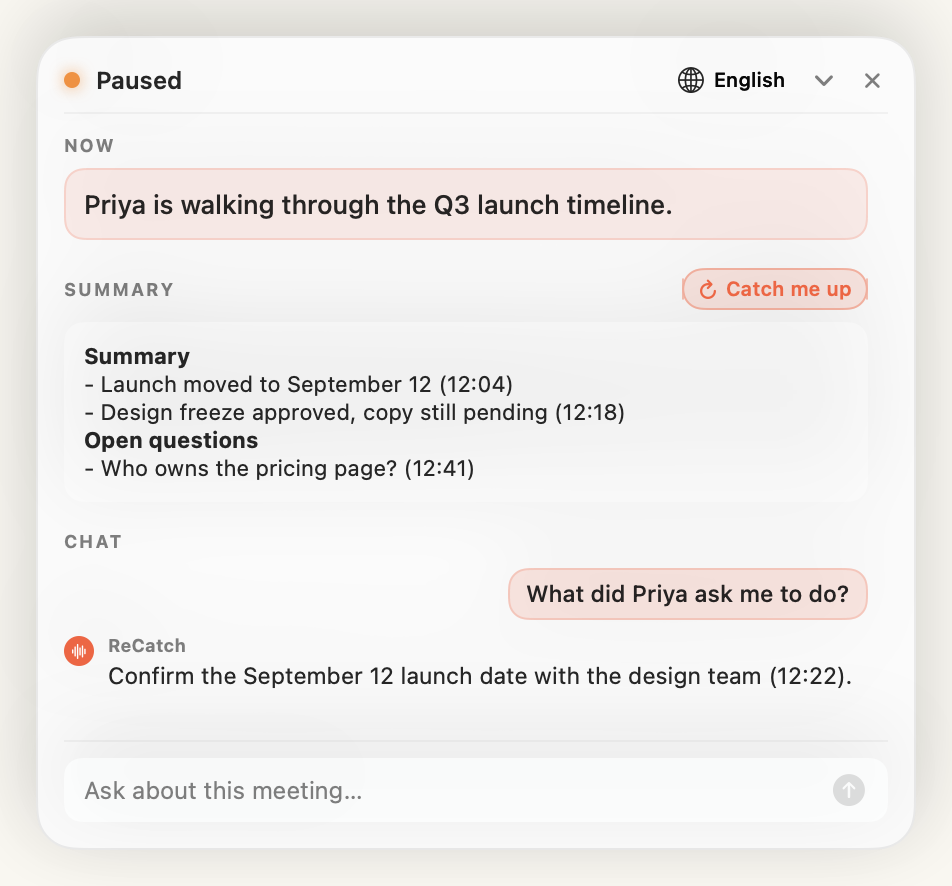
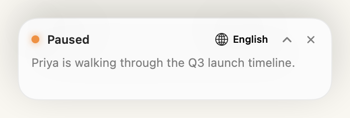
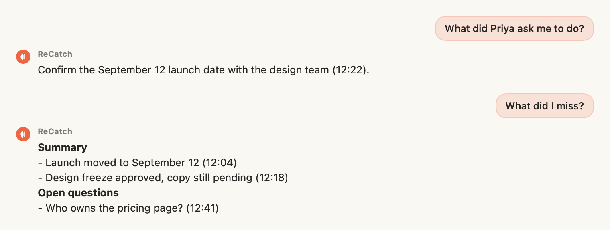

Spaced out? recatch caught it.
You can hear the meeting. recatch tells you what it means — a live summary while you listen, a catch-up when you drift, and answers when you ask.
Free & open source · Apple Silicon · macOS 14+

Everything in one floating panel.
recatch lives in your menu bar. Press ⌥⌘R and one panel tells you what's happening, what you missed, and answers what you ask.
Start listening
One click in the menu bar. recatch transcribes on your Mac with Whisper — nothing joins your call.
Catch up anytime
Drifted for a minute? Press ⌥⌘R for a timestamped summary: decisions, open questions, and what's aimed at you.
Ask the meeting
Ask anything. The answer comes straight from the transcript, in the meeting's own language.
A live summary, not a wall of words.
You can already hear the meeting. So instead of captions, recatch shows a live summary of what's happening — glance, then get back to work.
Catch me up in seconds.
Missed a few minutes? One press gives you the decisions and open questions, timestamped. Nobody has to know you drifted.

Ask the meeting.
Ask anything and get an answer from the transcript, in the meeting's language. recatch doesn't translate.

Your audio stays on this Mac.
Privacy isn't a settings page — it's how recatch is built. Everything on this list is how the app works today.
- Audio never leaves your Mac. Speech recognition runs on-device with Whisper.
- No bots, no accounts. Nothing joins your call and nothing is uploaded.
- Only what you ask is sent. The transcript window goes to the provider you choose — logged locally by time and size, never content.
- Transcripts expire. Stored locally, deleted after 3 days by default.
- Keys stay in your Keychain. Never in preferences or logs.
Bring your own brain.
You already pay for an AI. recatch plugs into it — and the app stays free.
recatch
The meeting companion. Catch up and ask, powered by the AI you already pay for. No subscription for the app.
Download freeDownload for macOS.
Free and open source. No account, no bots in your calls. Catch up on every meeting from your menu bar.
Download for macOSApple Silicon · macOS 14+ · first run downloads a speech model (~140 MB)
Prefer to build it yourself? The source is on GitHub.
Questions, answered.
What is recatch?
A free, open-source macOS app that listens to your meeting on your own machine. Press a key and it tells you what's happening and what you missed.
Can I use it today?
Yes. Download the macOS app — it's free and open source under the MIT license. It's an early version, so expect rough edges and tell us what breaks.
Where does my audio go?
Nowhere. Speech recognition runs on your device with Whisper. Only the transcript window you ask about goes to the provider you choose.
Does it translate?
No. Answers follow the meeting's language. Mixed languages? Pick your meeting language in settings.
What AI can I use?
Groq works today. Claude Code, opencode, Gemini CLI, Codex, DeepSeek, and any OpenAI-compatible endpoint are wired in — bring your own key or agent.
How long are transcripts kept?
3 days by default, stored only on your Mac. Change that, or delete everything, in settings.
Why does my Mac warn me when I open it?
The beta isn't notarized by Apple yet, so macOS can't confirm who made it. The source is public on GitHub if you'd rather check it yourself.